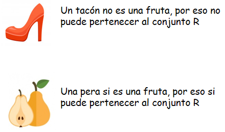

Conjuntos
En este capitulo aprenderás todo sobre conjuntos.
¿Qué es un conjunto y para qué nos sirve?
Un conjunto es un grupo de objetos (que pueden ser: frutas, colores, juguetes, personas, etc.) que comparten una característica común.
Ejemplo: en la nevera de tu casa hay manzanas, peras, leche, queso, bananos. Con estos elementos podemos formar 2 conjuntos:
Regla: Los conjuntos nos sirven para clasificar y ordenar objetos según su característica común.
- Lo que aprenderemos sobre conjuntos:
- Representación de conjuntos
- Cardinal de un conjunto
- Relación de pertenencia y no pertenencia
(1)Representación de conjuntos:
Hoy veremos dos formas de representar conjuntos:
- Diagramas de Venn
- Usando llaves
1. Un diagrama de Venn es un dibujo que nos muestra dentro de un círculo los objetos o elementos que queremos clasificar. Este círculo siempre lleva una letra mayúscula que es su nombre. Así:
2. Si no queremos dibujar el conjunto, podemos usar otra manera más sencilla, siguiendo estos pasos, observa:
Escribes el nombre del conjunto y escribes al lado 2 puntos:
R:
Luego dibujas una llave:
R: {
Dentro escribes el nombre de los elementos separándolos con una coma (,)
R: {naranja, manzana, sandía, fresa
Finalmente cierras la llave:
R: {naranja, manzana, sandía, fresa}
(2)Cardinal de un conjunto:
El cardinal de un conjunto es el número de elementos u objetos que tenemos dentro del conjunto.
Observa:
Este conjunto tiene 4 frutas, así que el cardinal del conjunto R es 4. Para saber cuál es el cardinal de tu conjunto solo tienes que contar cuántos elementos hay dentro.
(3)Relación de pertenencia y no pertenencia:
Para saber si un elemento o un objeto puede pertenecer o estar dentro de nuestro conjunto tenemos que compararlos y pensar si comparten la característica común.
Observa:
Para decir si un elemento o un objeto pertenece o no pertenece vamos a usar estos símbolos:

Ejemplo: